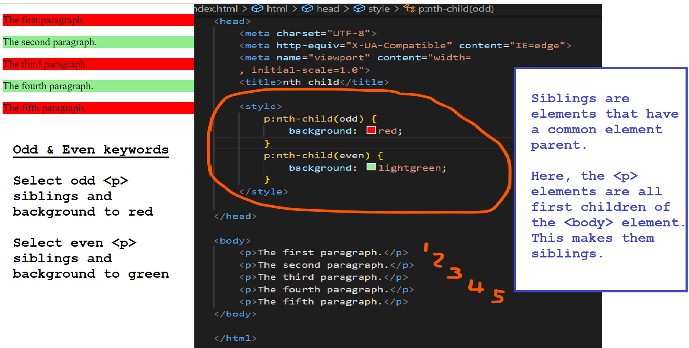
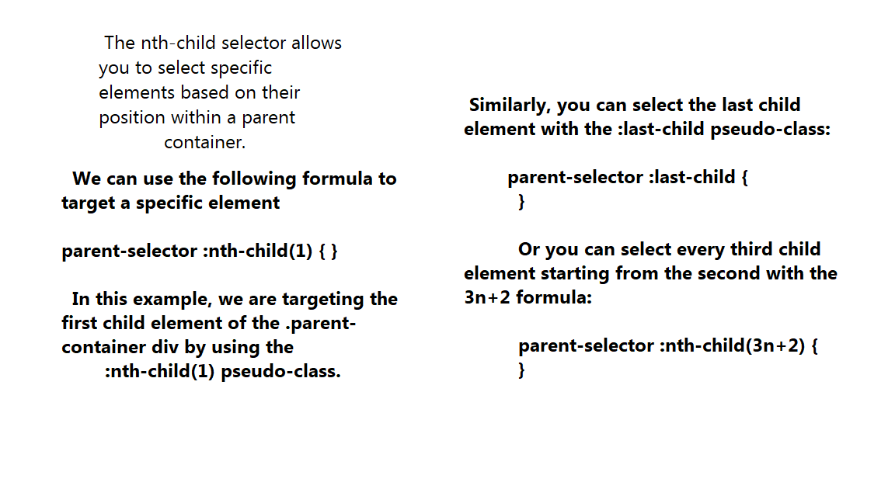
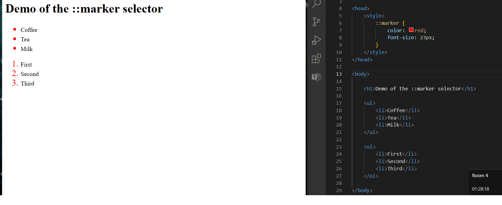

The "nth-child()" CSS Selector
Odd and Even Keywords

Selecting Specific Elements

Marker Selector

nth-child() Best Practices
-
Use clear, descriptive class names and IDs to make it easier to target elements with the nth-child selector.
-
Avoid using overly complex formulas.